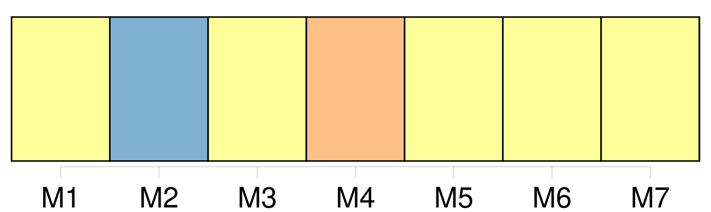
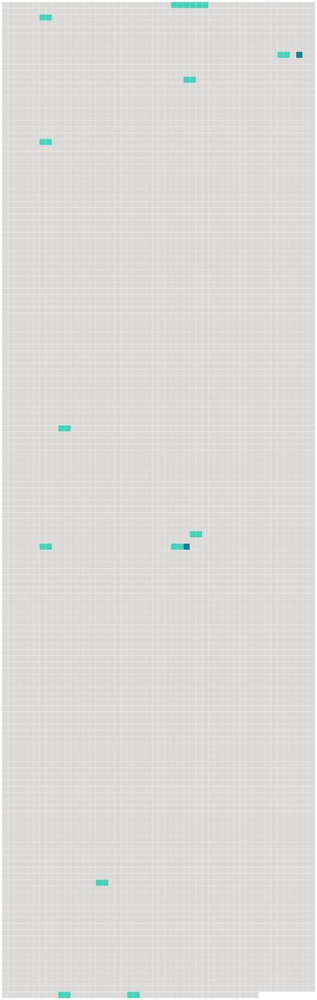

Longueur nb maillons : 14 mentions |
 |
… lorsque je lisais l'histoire du « Nautilus », je rêvais d'habiter une ville sous-marine, avec un petit peuple de mon choix ; [la terre avec toutes ses misères] me semblait un domaine trop mesquin. [1 phrases]
» [9 phrases]
» [4 phrases] Quelques-uns à peine firent de faibles objections, mais d'autres, parmi ceux qui avaient beaucoup souffert de la méchanceté des hommes sur [la terre] , témoignèrent un véritable enthousiasme pour l'idée originale du jeune ingénieur. [24 phrases] Il venait de perdre sa femme qu'il adorait, et lui -même, se croyant atteint d'un mal qui ne pardonne pas, partait dans quelques heures, pour aller vivre le peu de temps qu'il lui restait à passer sur [la terre] au pays où il était né, et où il n'avait plus aucun parent. [105 phrases]
Le nouveau curé ne put s'empêcher de rire de cette boutade, et répliqua que, sans doute, quelques-uns des habitants de Némoville avaient dû connaître ces dangereux bipèdes sur [la terre] , et n'avaient trouvé rien de mieux pour leur échapper que de s'enfoncer sous l'eau. [36 phrases] Au moment où les voyageurs allaient se rembarquer, cet homme vint à eux et leur dit : « Est -il vrai qu'il existe une ville sous-marine où l'on peut vivre en paix, loin de toutes les conventions du monde, loin de toutes les niaiseries et de toutes les faussetés qui fleurissent sur [la terre] ?? [1 phrases]
» [110 phrases] Un sous-marin qui avait été abandonné par une famille qui avait préféré retourner vivre sur [la terre] , avait été mis à sa disposition. [36 phrases] Pour me servir d'un vieux cliché, elle a l'air d'un ange égaré sur [la terre]
» |
 |
Il est possible de télécharger la ressource sur la page Ortolang |
Si vous avez des questions ou vous voyez des erreurs, merci d'envoyer un mail à silvia.federzoni89@gmail.com |